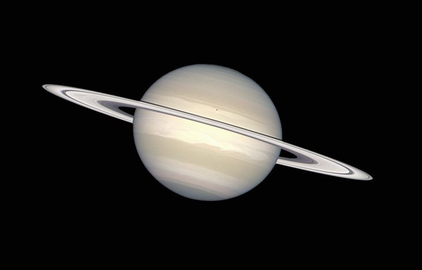

The Solar System contains 8 planets, with 4 inner planets and 5 outer planets.
There are also many other celestial objects such as asteroids, moons, and of course, the Sun.
Click an object to learn more!
The Sun
Radius: 696,000 km
Equator Circumference: 4.379,000km
Surface Temperature: 5600°C
Length of Day(Time taken to rotate on axis): 27 Earth Days
Moons: 0 - - - - - - - - - -
The Sun is the center of our Solar System. In fact, the Solar System is defined as everything that orbits around our Sun, hence the name "Solar" System.
The Inner Planets ("Terrestrial" Planets)
Mercury
Radius: 2,439.7 km
Equator Circumference: 15,329 km
Surface Temperature: -180°C (night) to 430°C (day)
Length of Day(Time taken to rotate on axis): 176 Earth Days
Length of Year(Time taken to orbit the Sun): 88 Earth Days
Moons: 0 - - - - - - - - - -
Mercury does not have an an atmosphere, meaning that it cannot trap heat on its surface. This means that at night the temperature can drop rapidly to below freezing tmeperatures.
Venus
Radius: 6,051.8 km
Equator Circumference: 38,025 km
Surface Temperature: ~475°C
Length of Day(Time taken to rotate on axis): 243 Earth Days
Length of Year(Time taken to orbit the Sun): 225 Earth Days
Moons: 0 - - - - - - - - - -
Despite being the second planet from the Sun, Venus has the hottest temperature of any of the planets. This is due to its extremely thick atmosphere that is about 100 times bigger than Earth's.
Earth
Radius: 6,378 km
Equator Circumference: 40,075 km
Surface Temperature: ~15°C
Length of Day(Time taken to rotate on axis): 1 Earth Day (23.9 hours)
Length of Year(Time taken to orbit the Sun): 365 Earth Days
Moons: 1 - - - - - - - - - -
You probably live on this planet. Although a day is classified as 24 hours, the sidreal day, or the time it takes it to roatae on its axis in comparis to the stars, is 23 Hours 56 minutes. However, because the Earth orbits the Sun, the day that is commonly used is a rotation in comparison to the Sun, which is 24 hours.
Mars
Radius: 3,390 kilometers
Equator Circumference: 21,344 km
Surface Temperature: -65°C
Length of Day(Time taken to rotate on axis): 24.6 Earth Hours
Length of Year(Time taken to orbit the Sun): 687 Earth days
Moons: - - - - - - - - - -
Due to Mars' large, solid core, it is believed that Mars could have once contained life. However, it is very likely that any life that used to be on Mars is now extinct as the core's temperature has cooled greatly over time, weakening the atmosphere.
The Outer Planets ("Gas Giants")
Jupiter
Radius: 69,911 km
Equator Circumference: 439,264 km
Surface Temperature: -110°C
Length of Day(Time taken to rotate on axis): 10 Earth Hours
Length of Year(Time taken to orbit the Sun): 11.86 Earth Years
Moons: At least 92 - - - - - - - - - -
Jupiter is so large that it has its own "small" system, known as the Jovian system. This system contains its many moons as well as rings (which are much fainter than those around Saturn) and asteroids. Jupiter is also famous for its Big Red Spot, which is a massive storm on Jupiter's gaseous "surface".

Saturn
Radius: 60,268 km
Equator Circumference: 378,675 km
Surface Temperature: -140°C
Length of Day(Time taken to rotate on axis): 11 Earth Hours
Length of Year(Time taken to orbit the Sun): 29.46 Earth Years
Moons: 83 - - - - - - - - - -
Saturn is famous for its ginormous rings, but it is not alone. In fact, all of the outer 4 planets, also known as the Gas Giants, have rings. Saturn, however, has by far the largest, most dense rings, which is why we can see them much clearer than rings on the other planets.
Uranus
Radius: 25,559 km
Equator Circumference: 160,590 km
Surface Temperature: -195°C
Length of Day(Time taken to rotate on axis): 17 Earth Hours
Length of Year(Time taken to orbit the Sun): 84 Earth Years
Moons: 27 - - - - - - - - - -
Uranus is the first of the two Ice Giants, the two furthest and therefore coldest planets in the Solar System. Like earth, it is tilted on an angle from its orbit, but Uranus is tilted at a massive 97.77°, probably due to collision with a large earth-sized object a long time ago.
Neptune
Radius: 24,764 km
Equator Circumference: 154,705 km
Surface Temperature: -200°C
Length of Day(Time taken to rotate on axis): 16 Earth Hours
Length of Year(Time taken to orbit the Sun): 165 Earth Years
Moons: 14 - - - - - - - - - -
Neptune is the densest of the four Gas Giants, and it is made of mostly water, methane, and ammonia- all considered "icy" materials, ence its classification as an Ice Giant. Winds on Neptune can reach up to 2000 km/h. Although Jupiter is the only planet famous for a "big spot", in 1989 there was also a storm on Neptune known as the Great dark Spot, which has since disappeared, but in its prime could have fit the entirety of Earth inside of itself.
These are the 8 planets that humans have discovered. Beyond this, the only object we know of is Pluto, a dwarf planet. there may be more planets beyond this, but there orbit is so large that we have not yet found them or concluded that they orbit the Sun.
 History
History Planets
Planets Satellites
Satellites Missions
Missions Quiz
Quiz